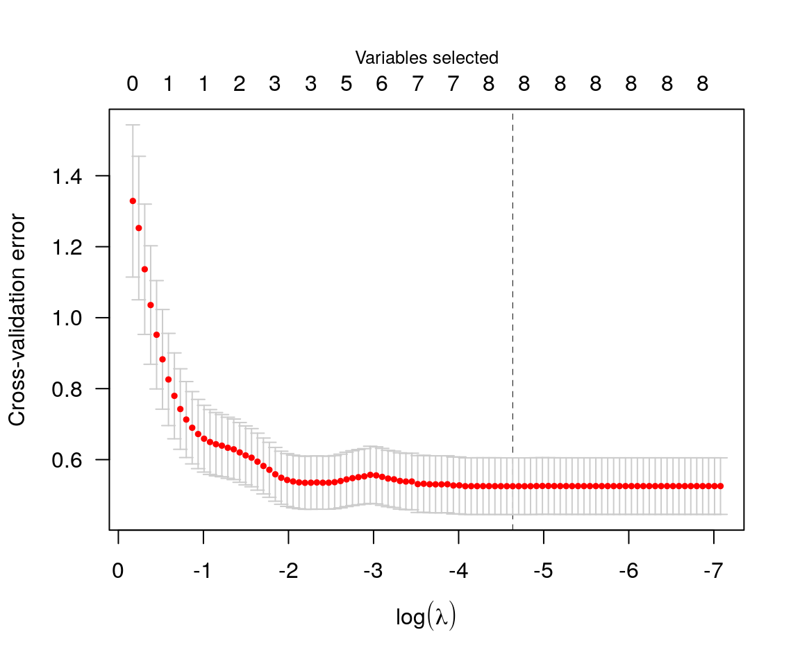
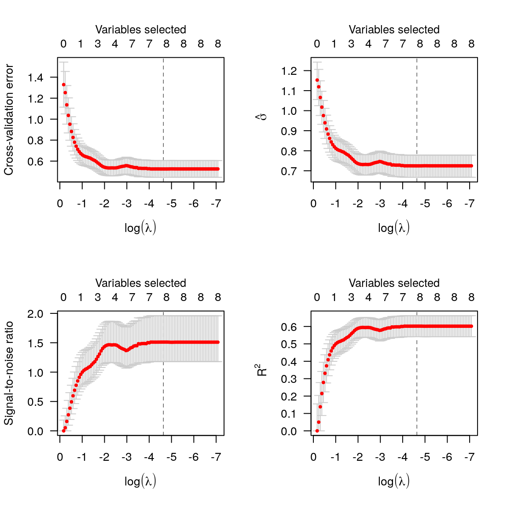
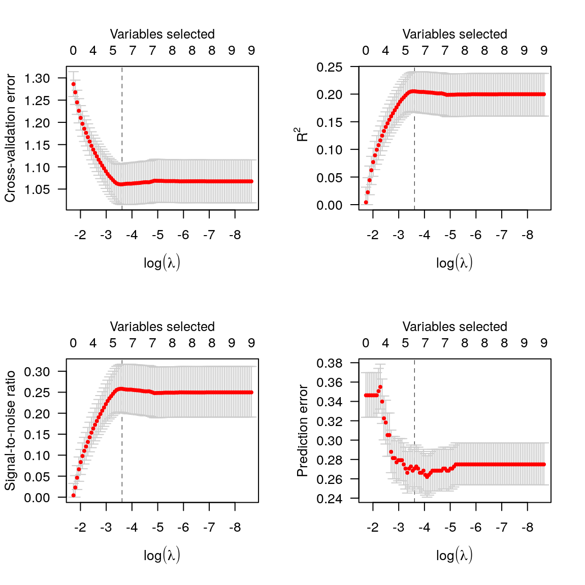
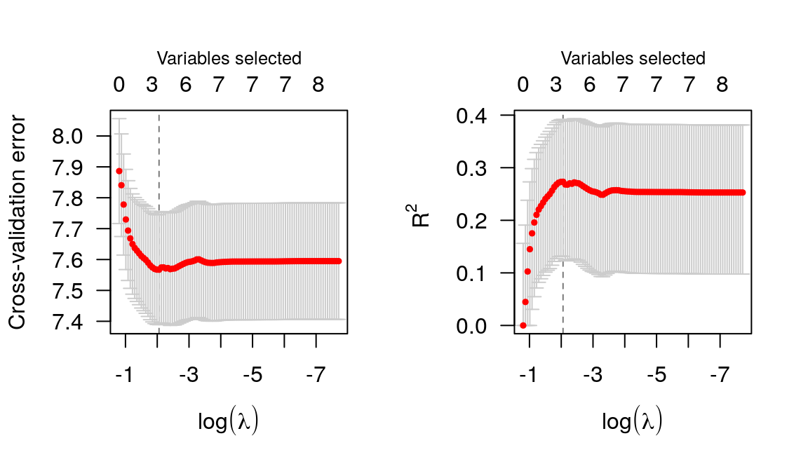
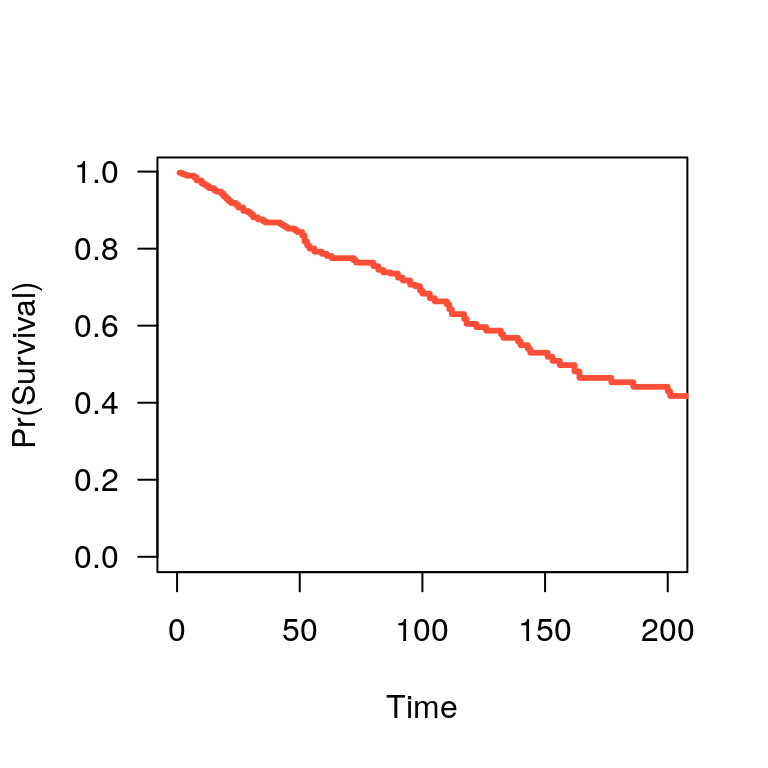
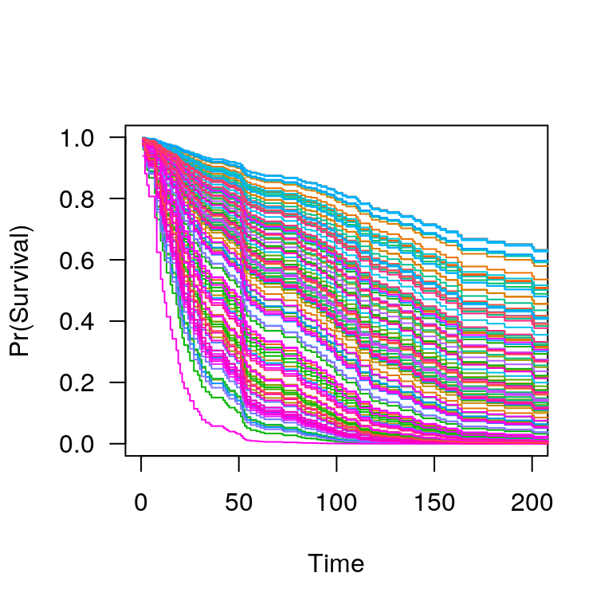

ncvreg fits models that fall into the penalized likelihood framework. Rather than estimating \(\bb\) by maximizing the likelihood, in this framework we estimate \(\bb\) by minimizing the objective function \[
Q(\bb|\X, \y) = \frac{1}{n}L(\bb|\X,\y) + P_\lam(\bb),
\] where the loss function \(L(\bb|\X,\y)\) is the deviance (\(-2\) times the log-likelihood), \(P_\lam(\bb)\) is the penalty, and \(\lam\) is a regularization parameter that controls the tradeoff between the two components. This article describes the different loss models available in ncvreg; see penalties for more information on the different penalties available.
Gaussian (linear regression)
In linear regression, the loss function is simply the squared error loss: \[ L(\bb|\X,\y) = \norm{\y-\X\bb}_2^2; \] this loss is proportional to the deviance if the outcome \(\y\) follows a normal distribution with constant variance and mean given by \(\X\bb\).
In the Prostate data packaged with ncvreg, the response is the prostate specific antigen (PSA), measured on the log scale, and follows an approximate normal distribution; see ?Prostate for more information on the data set. Loading this data set into R,
By default, ncvreg fits a linear regression model with a minimax concave penalty (MCP):
This produces a path of coefficient estimates, which we can plot with

Although the least squares loss function is convex, the MCP penalty is not. The resulting objective function, therefore, may or may not be convex. ncvreg uses a local convexity diagnostic, as described in Breheny and Huang (2011), to identify the regions of the coefficient path where the objective function is not convex; this is the gray shaded region in the plot. Users should be aware that solutions in this region may only be local optima of the objective function, not global ones.
Post-selection inference is available using the summary method:
summary(fit, lambda=0.05)
# MCP-penalized linear regression with n=97, p=8
# At lambda=0.0500:
# -------------------------------------------------
# Nonzero coefficients : 6
# Expected nonzero coefficients: 2.51
# Average mfdr (6 features) : 0.418
#
# Estimate z mfdr
# lcavol 0.53179 8.880 < 1e-04
# svi 0.67256 3.945 0.0018967
# lweight 0.60390 3.666 0.0050683
# lbph 0.08875 1.928 0.4998035
# age -0.01531 -1.788 1.0000000
# pgg45 0.00168 1.160 1.0000000The local marginal false discovery rate (mfdr) is given for each of the selected features. Roughly, this corresponds to the probability that the given feature is marginally independent of the residuals at that value of \(\lam\). In this case, it would appear that lcavol, svi, and lweight are clearly associated with the response, even after adjusting for the other variables in the model, while lbph, age, and pgg45 may be false positives selected simply by chance. For more information on summary() and its various options, see here.
Typically, one would carry out cross-validation for the purposes of assessing the predictive accuracy of the model at various values of \(\lambda\):

By default, the cross-validation error (CVE) is plotted; for all models in ncvreg, the cross-validation error is defined as \[
\begin{align*}
\CVE(\lam) &= \frac{1}{n} \sum_i L\{y_i, \eta_{-i}(\lam)\}\\
\eta_{-i}(\lam) &= \sum_j x_{ij}\bh_j(-i,\lam),
\end{align*}
\] where \(\bbh(-i,\lam)\) denotes the estimated regression coefficients at \(\lam\) for the fold in which observation \(i\) has been left out. The loss function is determined by the type of model; for least squares loss, therefore, \[
\CVE(\lam) = \frac{1}{n} \sum_i\{y_i-\eta_{-i}(\lam)\}^2\\
\]
Alternatively, one can plot \(\hat{\sigma}(\lam)\), the signal-to-noise ration (SNR), or \(R^2\):
par(mfrow=c(2,2))
plot(cvfit, type='cve')
plot(cvfit, type='scale') # sigma hat
plot(cvfit, type='snr')
plot(cvfit, type='rsq')
Calling summary on a cv.ncvreg object will provide a summary of these quantities at the value which minimizes \(\CVE\):
summary(cvfit)
# MCP-penalized linear regression with n=97, p=8
# At minimum cross-validation error (lambda=0.0097):
# -------------------------------------------------
# Nonzero coefficients: 8
# Cross-validation error (deviance): 0.53
# R-squared: 0.60
# Signal-to-noise ratio: 1.51
# Scale estimate (sigma): 0.725To access the elements of the fit, coef and predict methods are provided. For example, coef(fit, lambda=0.02) returns the estimated coefficients at \(\lambda\)=0.02, while coef(cvfit) returns the estimated coefficients at the value of \(\lam\) minimizing CVE.
Binomial (logistic regression)
In logistic regression, the loss function is: \[
L(\bb|\X,\y) = -2\sum_{i:y_i=1}\log\ph_i - 2\sum_{i:y_i=0}\log(1-\ph_i);
\] this loss is the deviance for a binomial distribution with probabilities \(P(Y_i=1)=\ph_i\) given by: \[
\ph_i = \frac{\exp(\eta_i)}{1+\eta_i},
\] where \(\be = \X\bb\) denotes the linear predictors. The Heart data provides an example of data that can be used with logistic regression. Loading this data set into R,
One can change the loss function by specifying family; to fit a penalized logistic regression model,
As before, you can call plot, coef, predict, summary, etc. on fit:
summary(fit, lambda=0.02)
# MCP-penalized logistic regression with n=462, p=9
# At lambda=0.0200:
# -------------------------------------------------
# Nonzero coefficients : 7
# Expected nonzero coefficients: 2.05
# Average mfdr (7 features) : 0.293
#
# Estimate z mfdr
# age 0.0506911 5.8368 < 1e-04
# famhist 0.9096673 4.1177 0.0006454
# tobacco 0.0802204 3.3117 0.0116427
# typea 0.0370468 3.1833 0.0176724
# ldl 0.1657752 3.1019 0.0228841
# sbp 0.0001648 0.9981 1.0000000
# obesity -0.0087180 -1.2579 1.0000000Cross-validation is similar, although (a) there is a new option, type='pred' for cross-validated prediction error (misclassification error) and (b) type='scale' is no longer an option:

Note that, as defined above, cross-validation error is the cross-validated deviance. At its optmium, the penalized logistic regression model can predict about 73% of coronary heart disease cases correctly (27% misclassification).
Poisson
In Poisson regression, the loss function is: \[
L(\bb|\X,\y) = 2\sum_i \left\{y_i\log y_i - y_i\log \mu_i + mu_i - y_i\right\};
\] note that some of these terms are constant with respect to \(\mu_i\) and can therefore be ignored during optimization. This loss is the deviance for a Poisson distribution \(Y_i \sim \text{Pois}(\mh_i)\) with rate parameter given by: \[
\mh_i = \exp(\eta_i).
\] To fit a penalized Poisson regression model with ncvreg:
Cox proportional hazards
The above models all fall into the category of distributions known as exponential families (hence the family) argument. ncvreg also allows users to fit Cox proportional hazards models, although these models fall outside this framework and are therefore fit using a different function, ncvsurv. In Cox regression, the deviance is \[
L(\bb|\X,\y) = -2\sum_{j=1}^{m} d_j \eta_j + 2\sum_{j=1}^{m} d_j \log\left\{\sum_{i \in R_j} \exp(\eta_i)\right\},
\] where \(t_1 < t_2 < \ldots < t_m\) denotes an increasing list of unique failure times indexed by \(j\) and \(R_j\) denotes the set of observations still at risk at time \(t_j\), known as the risk set.
The Lung data (see ?Lung for more details) provides an example of time-to-event data that can be used with Cox regression. Loading this data set into R,
To fit a penalized Cox regression model,
As before, you can call plot, coef, predict, summary, etc. on fit:
summary(fit, lambda=0.02)
# MCP-penalized Cox regression with n=137, p=8
# At lambda=0.0200:
# -------------------------------------------------
# Nonzero coefficients : 7
# Expected nonzero coefficients: 4.34
# Average mfdr (7 features) : 0.621
#
# Estimate z mfdr
# karno -0.032745 -6.5040 < 1e-04
# squamous -0.853399 -3.7843 0.0055248
# large -0.460405 -2.0522 0.5168683
# trt 0.294489 1.5967 0.8221987
# age -0.008869 -1.0297 1.0000000
# prior 0.033326 0.3585 1.0000000
# adeno 0.324743 1.3941 1.0000000Cross-validation is similar:

In addition to the quantities like coefficients and number of nonzero coefficients that predict returns for other types of models, predict() for an ncvsurv object can also estimate the baseline hazard (using the Kalbfleish-Prentice method) and therefore, the survival function. A method to plot the resulting function is also available:
S <- predict(fit, X[1,], type='survival', lambda=0.02)
S(365) # Estiamted survival at 1 year
# [1] 0.2447147
plot(S, xlim=c(0,200))
When multiple subjects are involved in the prediction:
S <- predict(fit, X, type='survival', lambda=0.02)
S[[1]](365) # Estimated survival at 1 year for subject 1
# [1] 0.2447147
S[[2]](365) # Estimated survival at 1 year for subject 2
# [1] 0.3340281
plot(S, xlim=c(0,200))